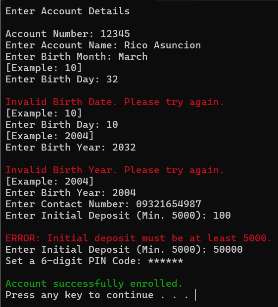

Projects
This page contains the projects I've worked and participated on.
Tile Puzzle
 |
 |
Project Repository
Programming Language used: C
A programming project built using the C language, its objective is to align the numbers from 1 to 19 in order. This was the first project I worked on, together with my 3 groupmates.
Minesweeper
 |
 |
Project Repository
Programming Language used: C
A programming project built using the C language, its objective is to open all the boxes without hitting a bomb, a classic game. This project contains 2 program, the first one is an automatic game where you input any key and the program will generate random x and y coordinates. On the other hand, the second program requires the user to input a number ranging from 0 - 19 to select a box to open. This was the second project I worked on, together with my 5 groupmates.
ATM
 |
 |
Project Repository
Programming Language used: C++
A project I built during my second-year college. The program contains a registration page for users willing to open a bank. A simple project that helps the user to deposit, withdraw, and send money to other users.
Project Repository
Programming Language used: Java
A project I built during my second year of college focuses on administrative tasks. These tasks include registration, browsing, and searching for students. The registration page requires the admin to input students' information, such as their full name, ID, password, address, mobile number, and email. The search function allows the admin to browse or search for a student, depending on the purpose.